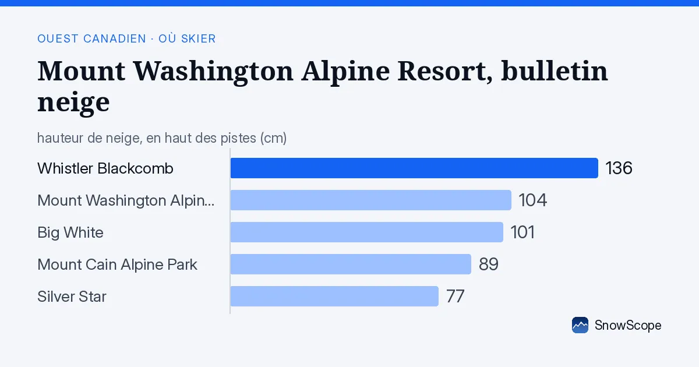

Mount Washington Alpine Resort, bulletin neige : 104 cm tout en haut (Ouest canadien, 18 novembre)
Mount Washington Alpine Resort se classe deuxième en Canada-Ouest avec 104 cm de neige sur ses pentes supérieures au 18 novembre. Whistler Blackcomb le devance avec 136 cm, tandis que Big White occupe la troisième place avec 101 cm—une course serrée entre trois domaines solides.
Consultez les prévisions neige en temps réel pour Mount Washington Alpine Resort sur l'application SnowScopeHauteurs de neige, alertes poudreuse et carte 3D, gratuitement.
Les pentes supérieures accueillent les premières vraies neiges de la saison
À Mount Washington Alpine Resort, les pentes supérieures à 1 569 m affichent 104 cm aujourd'hui. À mi-montagne (1 325 m), la mesure tombe à seulement 6 cm, et le bas de la station (1 081 m) n'a que 2 cm. Cette variation vous montre où l'hiver arrive en Canada-Ouest : les hauteurs accumulent et conservent la neige ; les basses altitudes restent dégagées.
Le manteau neigeux régional s'épaissit. Les données montrent 322 740 km² enneigés en Canada-Ouest le 18 novembre, contre 278 460 km² deux jours plus tôt. Les prévisions régionales pour le 21 novembre suggèrent un léger repli à 317 430 km², bien que 46 domaines de la région conserveront encore du manteau sur leurs pentes supérieures.
| Station | Hauteur de neige | Neige fraîche, 72 h | Attendu, jours suivants | Sommet |
|---|---|---|---|---|
| Whistler Blackcomb | 136 cm | 8 cm | 0 cm | 2 259 m |
| Mount Washington Alpine Resort | 104 cm | 8 cm | 0 cm | 1 569 m |
| Big White | 101 cm | 4 cm | 0 cm | 2 271 m |
| Mount Cain Alpine Park | 89 cm | 8 cm | 0 cm | 1 616 m |
| Silver Star | 77 cm | 5 cm | 0 cm | 1 886 m |

Whistler Blackcomb fixe la barre
Les 136 cm de Whistler Blackcomb en pentes supérieures (à 2 259 m) constituent le manteau le plus épais de la région aujourd'hui. Son profil de haut en bas est plus marqué que celui de Mount Washington : à mi-montagne, la neige se réduit à 49 cm, et au bas de la station à 653 m, elle disparaît. Ce changement vertical extrême est courant dans les montagnes côtières sèches—les faces nord exposées au froid retiennent la neige tandis que les pentes basses et ensoleillées restent brunes.
Le terrain plus compact de Mount Washington Alpine Resort (bas à 1 081 m, sommet à 1 569 m) produit un gradient moins prononcé. Ses 104 cm en pentes supérieures la maintiennent en compétition, mais l'altitude plus basse de la base signifie moins de variation du manteau de haut en bas. Big White, avec 101 cm sur son plateau supérieur à 2 271 m, complète le trio de tête.
Ce que les niveaux de congélation signifient pour les prochains jours
Le 18 novembre, le niveau de congélation à Mount Washington Alpine Resort varie entre 710 m et 1 630 m. Cela signifie que le bas de la station se trouve dans une zone de fonte, tandis que les pentes supérieures restent gelées. Le 19 novembre, le niveau de congélation monte à 840 m à 1 730 m—l'intégralité de la station entre dans la zone de dégel. Le 20 novembre, il baisse fortement à 630 m à 1 620 m, ramenant des conditions hivernales sur les pentes supérieures.
La neige mouillée le 19 novembre peut devenir lourde et lente. Si vous prévoyez de skier ce jour-là, visez les pentes supérieures où les températures restent sous zéro, ou attendez le 20 novembre quand une masse d'air plus froid arrive et la neige se raffermit.
Une neige mince à ce stade : sachez ce qui se cache en dessous
Cent quatre centimètres semble profond, mais la neige en début de saison est souvent mince et repose sur de l'herbe, de la roche ou de l'ancienne terre. À Mount Washington Alpine Resort, le bas de la station affiche encore 2 cm—à peine suffisant pour couvrir les obstacles. Restez sur les pistes balisées où la station a préparé le terrain.
La région a reçu 8 cm en trois jours avant le 18 novembre à Mount Washington Alpine Resort. Les prévisions ne montrent pas de neige nouvelle dans les sept prochains jours. Cela signifie pas de nouvel apport de profondeur et pas de poudreuse fraîche ; vous skiez sur ce que vous voyez.
L'avantage précoce de Big White par rapport aux saisons passées
Big White entre à la mi-novembre avec 101 cm en pentes supérieures à 1 891 m. À cette altitude, les données indiquent 50 cm aujourd'hui—plus de neige que n'en est tombée à cette date sur 33 des 46 hivers précédents. La profondeur habituelle pour le 18 novembre à cette altitude est 38 cm, donc cette saison est en avance sur la normale.
Mount Washington Alpine Resort raconte une histoire différente à des hauteurs comparables. Les données indiquent 31 cm à 1 456 m, la pire lecture des 46 hivers précédents pour le 18 novembre. Cette station accuse un énorme retard. Pour les skieurs de début de saison, Big White et Whistler Blackcomb offrent de meilleures réserves de profondeur que Mount Washington Alpine Resort, bien que les trois se trouvent toujours dans la phase fragile du début de saison.
Planifiez votre visite
Si vous vous dirigez vers Mount Washington Alpine Resort au cours de la prochaine semaine, concentrez-vous sur les pentes supérieures et évitez la base de la station jusqu'à l'arrivée de plus de neige. Le site officiel du domaine indiquera quels remontées et pistes sont ouvertes ; cette carte montre quelle profondeur de neige est présente, non quels secteurs sont actifs.
Consultez le bulletin officiel d'avalanche avant de partir en randonnée ou de quitter les pistes balisées. Les prévisions changent quotidiennement, alors consultez la carte le matin de votre départ. La randonnée en début de saison sur une neige mince présente des risques différents de la randonnée en hiver profond.
Conseils aux skieurs
- Mount Washington Alpine Resort accuse 30 cm de retard sur Whistler Blackcomb aujourd'hui. Si la profondeur maximale de neige est importante pour votre visite, Whistler Blackcomb ou Big White sont des valeurs plus sûres cette semaine.
- Les pentes supérieures de Mount Washington Alpine Resort sont là où se trouve la neige ; la base est dégagée. Planifiez vos descentes entre 1 300 m et 1 569 m pour les meilleures chances d'une neige continue.
- Le 19 novembre, les niveaux de congélation montent au-dessus de 1 730 m à Mount Washington Alpine Resort. Si vous devez skier ce jour-là, skiez tôt quand la neige est encore gelée, ou attendez le 20 novembre.
- La neige de début de saison cache souvent les rochers et les racines. Restez sur les pistes damées jusqu'à ce que la profondeur augmente. Les rochers cachés sous une neige mince peuvent abîmer un ski.
- Avant de quitter les pistes ou de partir en randonnée n'importe où en Canada-Ouest, lisez le bulletin officiel d'avalanche. Consultez-le à nouveau la veille de votre départ.
À propos de ces chiffres
Les hauteurs de neige des stations sont la neige la plus épaisse sur le haut du domaine à la date indiquée ; ce sont des estimations pour une zone, pas une mesure en un point. Les prévisions peuvent changer. Consultez toujours le bulletin d'avalanche officiel avant le hors-piste.
Bulletins d'avalanche officiels: Avalanche Canada
Citer ce bulletin
Pour la recherche, l'enseignement ou la presse : chiffres et graphiques réutilisables librement sous CC BY 4.0 avec cette citation.
SnowScope (2026), Mount Washington Alpine Resort, bulletin neige : 104 cm tout en haut (Ouest canadien, 18 novembre), https://snowscope.app/blog/fr/2026/11/western-canada-mount-washington-alpine-resort-snow-depth-today-18-november-2026.html, consulté le 2026-11-18
SnowScope (Atlas Labs). (2026, November 18). Mount Washington Alpine Resort, bulletin neige : 104 cm tout en haut (Ouest canadien, 18 novembre). SnowScope snow reports. https://snowscope.app/blog/fr/2026/11/western-canada-mount-washington-alpine-resort-snow-depth-today-18-november-2026.html
BibTeX
@misc{snowscope2026westerncanadamountwashin,
author = {{SnowScope (Atlas Labs)}},
title = {Mount Washington Alpine Resort, bulletin neige : 104 cm tout en haut (Ouest canadien, 18 novembre)},
year = {2026},
month = nov,
howpublished = {\url{https://snowscope.app/blog/fr/2026/11/western-canada-mount-washington-alpine-resort-snow-depth-today-18-november-2026.html}},
note = {Published 2026-11-18 18:32 UTC; accessed 2026-11-18}
}· CC BY 4.0 · Méthodes, données et outils →
Suivre Mount Washington Alpine Resort
Gratuit : un message quand la neige arrive, et la météo chaque matin.
Autres bulletins neige

Y a-t-il plus de neige qu'il y a un an ? Nous avons comparé aujourd'hui avec le 15 novembre de l'hiver dernier dans 4 stations dans l'Ouest canadien …

150 cm en haut du domaine : voilà pourquoi Whistler Blackcomb est en tête de notre liste. La neige au sol, la neige des 72 dernières heures, la neige …